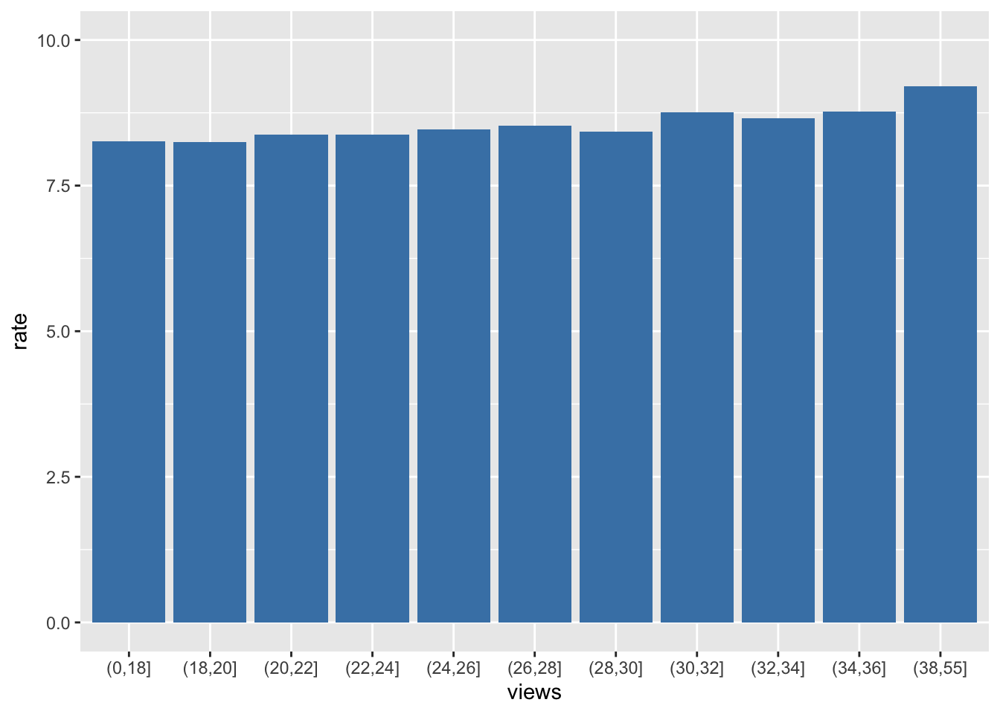

Before starting working on the project, we wanted to ensure that the rating was not steady during the series.
To examine this hypothesis, we created three visualizations which helped us understand how’s the data looked like
1) Density
2) Change over time
3) Relation between US view to IMDb rating
density of the rating <Before starting working on the data, we wanted to know if IMDB rating is distributed evenly, Normally or other known distribution.
As can be seen, the distribution looks like a Normal, with a big variance
rating_dentisy <- ggplot(friends_info, aes(x=imdb_rating)) +
geom_density(col ="steelblue", fill = "steelblue" )
rating_dentisyFor checking the hypothesis we conducted a Shapiro test to examine it.
shapiro.test(friends_info$imdb_rating)##
## Shapiro-Wilk normality test
##
## data: friends_info$imdb_rating
## W = 0.96358, p-value = 1.013e-05
By the above result (p-value is less than 0.05), we deny our null hypothesis, in which the distribution is Normal.
Change Over Time
As well as the type of distribution, we wanted to be unsure that the IMDb rating is not steady over time.
As can be seen in the graph below, the IMDb rating is not steady and without a permanent pattern.
mean_rating_per_season <- ggplot(data = friends_info, aes(x = interaction(season, episode),
y = imdb_rating, group = 1)) +
geom_line(col ="steelblue")
mean_rating_per_season
In addition to the above tests, we assume that the US_million_views will Impact our hypothesis as it may have a high correlation with rating.
So we visualize the relation between them by two means.
1) Average rating of the episode based on how many views it got.
2) Pearson Test to ensure correlation.
The graph below shows the average IMDb rating categorize on US views in millions
As can be seen, there is a visual correlation between the number of views and the average IMDb rating.
dt <- friends_info %>% select(us_views_millions, imdb_rating)
interval_breaks <- c(0,18,20,22,24,26,28,30,32,34,36,38,55)
dt_grouped <- dt %>%
mutate(views = cut(us_views_millions, breaks = interval_breaks)) %>%
group_by(views) %>%
summarize(
rate = mean(imdb_rating)
)
To ensure that there is a real correlation, we conducted a Pearson Test.
The graph result below shows the result of the correlation test between US millions of views to IMDb rating
As can be seen, the P-value is less than 5%, which means there is a correlation between the number of views and the average IMDb rating.
Moreover, the test gives us the correlation coefficient, which stands at 0.377.
##
## Pearson's product-moment correlation
##
## data: friends_info$us_views_millions and friends_info$imdb_rating
## t = 6.2344, df = 234, p-value = 2.097e-09
## alternative hypothesis: true correlation is not equal to 0
## 95 percent confidence interval:
## 0.2623565 0.4818880
## sample estimates:
## cor
## 0.3774125